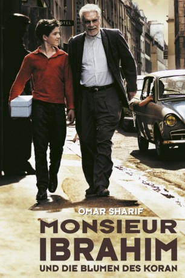

#4239 Monsieur Ibrahim und die Blumen des Koran
Alternativ: Monsieur Ibrahim (Englischer Titel)
 
 IMDB-Wertung: 7.5 / 10
IMDB-Wertung: 7.5 / 10  Metascore: 0
Metascore: 0 
Der junge Jude Momo (P. Boulanger) lebt Ende der 50er Jahre mit seinem depressiven Vater (G. Melki) im jüdischen Viertel von Paris. Weil die Mutter sie verlassen hat, besorgt der ernste Momo den Haushalt und gönnt sich mit Besuchen bei den Prostituierten seines Viertels den einzigen Ausbruch aus dem Alltagstrott.\r Als Momos Vater Selbstmord begeht, ist Momo plötzlich ganz auf sich allein gestellt. Er hat nur einen Freund – einen einzigen – und das ist Monsieur Ibrahim (O. Sharif), der Lebensmittelhändler aus der Rue Bleue.\r Aber die Dinge sind nicht so, wie sie scheinen: Denn die Rue Bleue ist nicht blau, Monsieur Ibrahim ist kein Araber und das Leben ist nicht zwangsläufig ein Trauerspiel ...
Jahr: 2003
Dauer: 94 Minuten
FSK: 6
Land: Frankreich Studio: Falcom MediaTonspuren:
Untertitel:
Auflösung: 1080p (1792x1080) Größe: 7833 MB
Genre: Komödie, Drama
Regisseur: François Dupeyron
Drehbuch: Ilya Naishuller
Soundtrack:
Darsteller:
 Omar Sharif als Monsieur Ibrahim Deneji
Omar Sharif als Monsieur Ibrahim Deneji Pierre Boulanger als Moses 'Momo' Schmitt
Pierre Boulanger als Moses 'Momo' Schmitt Gilbert Melki als Le père de 'Momo'
Gilbert Melki als Le père de 'Momo' Isabelle Adjani als La star
Isabelle Adjani als La star Guillaume Gallienne als Le vendeur voiture
Guillaume Gallienne als Le vendeur voiture- Éric Caravaca als 'Momo' 30 ans
 Isabelle Renauld als La mère de 'Momo'
Isabelle Renauld als La mère de 'Momo'- Lola Naymark als Myriam
 Anne Suarez als Sylvie
Anne Suarez als Sylvie- Mata Gabin als Fatou
- Céline Samie als Eva
- Guillaume Rannou als Le realisateur
- Manuel Le Lièvre als Le moniteur auto-école
- Daniel Znyk als Le gendarme
- Françoise Armelle als La maitresse d'école
- Sylvie Herbert als L'eximinateur
- Claude Merlin als Le notaire
- Pascal Vincent als Le bouquiniste
- Tessa Volkine als Myriam's Mother
- Marie-Sophie Ahmadi als Nadia
- Maryse Deol als L'employer administrative #1
- Gérard Bôle du Chaumont als L'employer administrative #2
- François Toumarkine als L'employer administrative #3
- Sylvie Debrun als L'employer administrative #4
- Önder K. Açikbas als Motocycliste
- Jérémy Sitbon als 'Momo' 8 ans
Datei: X:\2003(G-M)\Monsieur Ibrahim und die Blumen des Koran (2003, FSK6, 1792x1080).mkv seit 26.08.2016
Festplatte: HD 2003-2004-2005(A-F)
 Es gibt insgesamt 33 Filme in der Gruppe '2003(G-M)'
Es gibt insgesamt 33 Filme in der Gruppe '2003(G-M)'